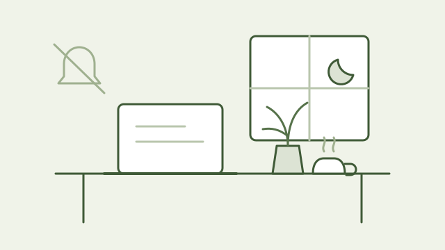

一本书，几则短札，两首小诗。A book, a few notes, two poems.
长一些的异乡故事，短一些的开发与研究笔记，还有用一门还不熟的语言写的短句。A longer story of life abroad, shorter notes on making and research, and short lines in a language I am still learning.


书 · 整理初稿BOOK · DRAFT EDITION
大不了就出个 BugWorst Case, a Bug
我在北美重启生活Restarting Our Life in North America
一个 F2 陪读者与 F1 队友，从德州小镇到加州阳光，在异乡把生活一点点重新跑通。5 卷 16 章，前言与后记。An F2 accompanying spouse and her F1 partner, from a small Texas town toward California sunshine, rebuilding daily life far from home. Five parts, sixteen chapters, a preface and an afterword.
随笔Essays

先把一个小问题解决好Start with one small problem
功能多，不等于工具好用。先把最常发生的一步做顺：导入一段素材、完成一次练习，或找到一个文件。让第一次使用有结果，再考虑下一层复杂度。More features do not automatically make a better tool. Start with a frequent task: importing a clip, finishing an exercise, or finding a file. Make the first session useful before adding another layer of complexity.
阅读全文Read note →让研究可以被复查Make research reviewable
一个漂亮的结果只是起点。记录数据范围、方法假设和验证方式，把探索过程与结论放在一起。下一次回头看时，应该能说清楚：这个结果是怎样得到的，又在哪些条件下可能失效。A promising result is a starting point. Record the data scope, assumptions and validation alongside the conclusion. When you return to it, you should be able to explain how the result was reached and where it might stop holding up.
阅读全文Read note →
给注意力留一点空间Leave room for attention
工具可以让事情更快，也应该让人更从容。少一次打断、少一个必须立刻处理的提示，多一点完成当前事情的空间。有时候，最值得做的功能，是让界面安静下来。Tools can make things faster and leave us less hurried. One fewer interruption, one fewer prompt demanding an immediate response, a little more space to finish the task at hand. Sometimes the most useful feature is a quieter interface.
阅读全文Read note →英文小诗Poems
英文句子短，逼着我把话说准——和写代码有点像。Short English sentences force precision — not unlike code.
 01 / Muir Woods · 2026
01 / Muir Woods · 2026
Rings of Time and Light
Sunlight falls
through a thousand years of leaves,
waving a soft mist in the air.
Mooncake Waiting
The moon was full, but I was not home.
Mid-Autumn came and went
through phone calls
下一首还在写。The next one is still being written.